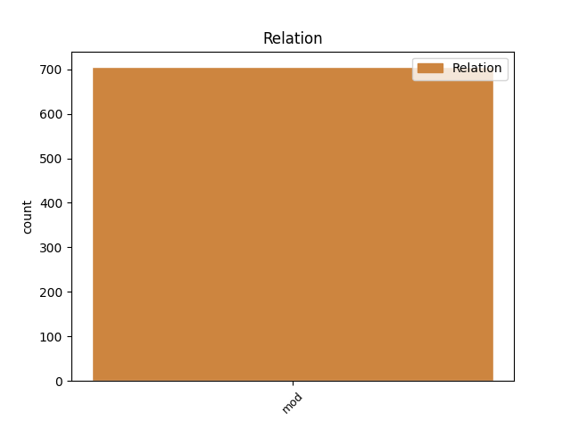

Distribution of features within this leaf

Agreement Rules sorted by frequency.
- When the dependent token is the modifer(mod) of the head token, and the dependent token is ADJ.
1 od _ _ _ _ 0 _ _ _
2 fructala _ _ _ _ 0 _ _ _
3 voda _ _ _ _ 0 _ _ _
4 samo _ _ _ _ 0 _ _ _
5 da _ _ _ _ 0 _ _ _
6 pač _ _ _ _ 0 _ _ _
7 eee _ _ _ _ 0 _ _ _
8 z _ _ _ _ 0 _ _ _
9 okusom _ _ _ _ 0 _ _ _
10 ampak _ _ _ _ 0 _ _ _
11 da _ _ _ _ 0 _ _ _
12 ni _ _ _ _ 0 _ _ _
13 nič _ _ _ _ 0 _ _ _
14 drugega _ _ _ _ 0 _ _ _
15 kakor _ _ _ _ 0 _ _ _
16 sama sam ADJ Agpfsn Case=Nom|Degree=Pos|Gender=Fem|Number=Sing 17 mod _ msd=Ppnzei|word=sama
17 voda voda NOUN Ncfsn Case=Nom|Gender=Fem|Number=Sing 0 _ _ _
18 pa _ _ _ _ 0 _ _ _
19 sadje _ _ _ _ 0 _ _ _
Disagree Examples:
1 trenutni _ _ _ _ 0 _ _ _
2 slovensko slovenski ADJ Agpnsn Case=Nom|Degree=Pos|Gender=Neut|Number=Sing 4 mod _ msd=Ppnsei|word=slovensko
3 ameriški _ _ _ _ 0 _ _ _
4 odnosi odnos NOUN Ncmpn Case=Nom|Gender=Masc|Number=Plur 0 _ _ _
5 so _ _ _ _ 0 _ _ _
6 kakšni _ _ _ _ 0 _ _ _
7 in _ _ _ _ 0 _ _ _
8 kakšni _ _ _ _ 0 _ _ _
9 so _ _ _ _ 0 _ _ _
10 lahko _ _ _ _ 0 _ _ _
11 v _ _ _ _ 0 _ _ _
12 bodoče _ _ _ _ 0 _ _ _
13 če _ _ _ _ 0 _ _ _
14 bo _ _ _ _ 0 _ _ _
15 obama _ _ _ _ 0 _ _ _
16 in _ _ _ _ 0 _ _ _
17 bo _ _ _ _ 0 _ _ _
18 vladal _ _ _ _ 0 _ _ _
19 v _ _ _ _ 0 _ _ _
20 beli _ _ _ _ 0 _ _ _
21 hiši _ _ _ _ 0 _ _ _
22 ? _ _ _ _ 0 _ _ _
1 in _ _ _ _ 0 _ _ _
2 vidimo _ _ _ _ 0 _ _ _
3 da _ _ _ _ 0 _ _ _
4 jih _ _ _ _ 0 _ _ _
5 je _ _ _ _ 0 _ _ _
6 nekaj _ _ _ _ 0 _ _ _
7 pa _ _ _ _ 0 _ _ _
8 spet _ _ _ _ 0 _ _ _
9 ne _ _ _ _ 0 _ _ _
10 toliko _ _ _ _ 0 _ _ _
11 ne _ _ _ _ 0 _ _ _
12 da _ _ _ _ 0 _ _ _
13 je _ _ _ _ 0 _ _ _
14 razmerje _ _ _ _ 0 _ _ _
15 vendarle _ _ _ _ 0 _ _ _
16 precej _ _ _ _ 0 _ _ _
17 močnejše _ _ _ _ 0 _ _ _
18 v _ _ _ _ 0 _ _ _
19 prid prid NOUN Ncmsan Animacy=Inan|Case=Acc|Gender=Masc|Number=Sing 0 _ _ _
20 eee _ _ _ _ 0 _ _ _
21 javnim javen ADJ Agpfpd Case=Dat|Degree=Pos|Gender=Fem|Number=Plur 19 mod _ msd=Ppnzmd|word=javnim
22 kakor _ _ _ _ 0 _ _ _
23 kje _ _ _ _ 0 _ _ _
24 eee _ _ _ _ 0 _ _ _
1 eee _ _ _ _ 0 _ _ _
2 potem _ _ _ _ 0 _ _ _
3 pa _ _ _ _ 0 _ _ _
4 sorte _ _ _ _ 0 _ _ _
5 chardonnay _ _ _ _ 0 _ _ _
6 sivi _ _ _ _ 0 _ _ _
7 pinot _ _ _ _ 0 _ _ _
8 laški _ _ _ _ 0 _ _ _
9 rizling _ _ _ _ 0 _ _ _
10 renski _ _ _ _ 0 _ _ _
11 rizling _ _ _ _ 0 _ _ _
12 rumeni _ _ _ _ 0 _ _ _
13 muškat _ _ _ _ 0 _ _ _
14 kerner _ _ _ _ 0 _ _ _
15 eee _ _ _ _ 0 _ _ _
16 v _ _ _ _ 0 _ _ _
17 suhih _ _ _ _ 0 _ _ _
18 polsuhih _ _ _ _ 0 _ _ _
19 variantah varianta NOUN Ncfpl Case=Loc|Gender=Fem|Number=Plur 0 _ _ _
20 v _ _ _ _ 0 _ _ _
21 polsladkih _ _ _ _ 0 _ _ _
22 odvisno odvisen ADJ Agpnsn Case=Nom|Degree=Pos|Gender=Neut|Number=Sing 19 mod _ msd=Ppnsei|word=odvisno
23 od _ _ _ _ 0 _ _ _
24 blagovne _ _ _ _ 0 _ _ _
25 znamke _ _ _ _ 0 _ _ _
1 zanimiva _ _ _ _ 0 _ _ _
2 je _ _ _ _ 0 _ _ _
3 tudi _ _ _ _ 0 _ _ _
4 izmenjava izmenjava NOUN Ncfsn Case=Nom|Gender=Fem|Number=Sing 0 _ _ _
5 mladih mlad ADJ Agpmpg Case=Gen|Degree=Pos|Gender=Masc|Number=Plur 4 mod _ msd=Ppnmmr|word=mladih
1 prav _ _ _ _ 0 _ _ _
2 je _ _ _ _ 0 _ _ _
3 da _ _ _ _ 0 _ _ _
4 ste _ _ _ _ 0 _ _ _
5 uporabili _ _ _ _ 0 _ _ _
6 izraz izraz NOUN Ncmsan Animacy=Inan|Case=Acc|Gender=Masc|Number=Sing 0 _ _ _
7 zgodovinsko zgodovinski ADJ Agpfsi Case=Ins|Degree=Pos|Gender=Fem|Number=Sing 6 mod _ msd=Ppnzeo|word=zgodovinsko
8 eee _ _ _ _ 0 _ _ _
9 zlasti _ _ _ _ 0 _ _ _
10 za _ _ _ _ 0 _ _ _
11 rezultat _ _ _ _ 0 _ _ _
12 teh _ _ _ _ 0 _ _ _
13 volitev _ _ _ _ 0 _ _ _
14 ki _ _ _ _ 0 _ _ _
15 so _ _ _ _ 0 _ _ _
16 pokazali _ _ _ _ 0 _ _ _
17 prvič _ _ _ _ 0 _ _ _
18 privrženost _ _ _ _ 0 _ _ _
19 američanov _ _ _ _ 0 _ _ _
20 spremembam _ _ _ _ 0 _ _ _